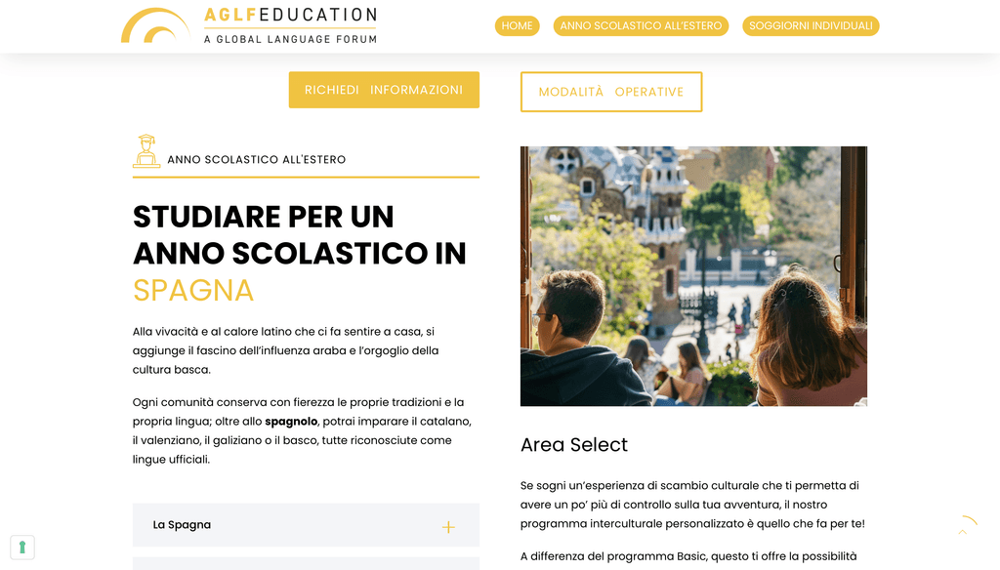
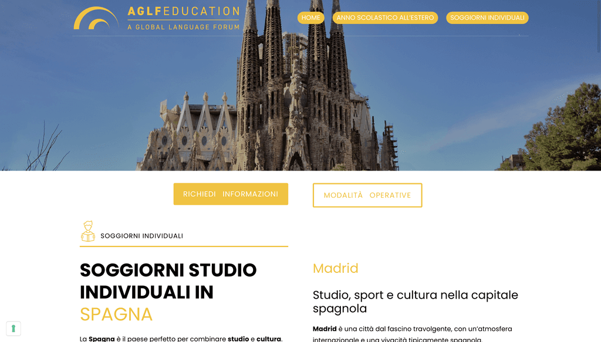

Web Development
During university, I was fortunate enough to do two extracurricular internships.
I did them at Officina48 S.n.C., where I had the opportunity to learn how to use WordPress and Elementor.



During my internship at Officina48, I worked inside a real creative workflow, collaborating on digital projects for local brands and businesses.
I was involved in content creation, visual design and website development, contributing to social media materials, graphic assets and WordPress-based layouts.
This experience taught me how ideas move from concept to execution, how deadlines shape creativity, and how design must always serve a clear objective. It was a hands-on environment where precision, adaptability and problem-solving mattered as much as aesthetics.
Screenshots above: AGLF Education


During my second internship, I took on a more central role in web projects, working extensively on municipal and institutional websites across the local area.
I was involved in structuring pages, managing content, and supporting the development of clear, accessible digital interfaces designed for public communication.
This phase strengthened my understanding of real-world workflows, responsibility, and the importance of clarity, usability and reliability in digital design.
Let’s Talk
If you need a website for your business or for an event, let’s create it together!
Contact Me